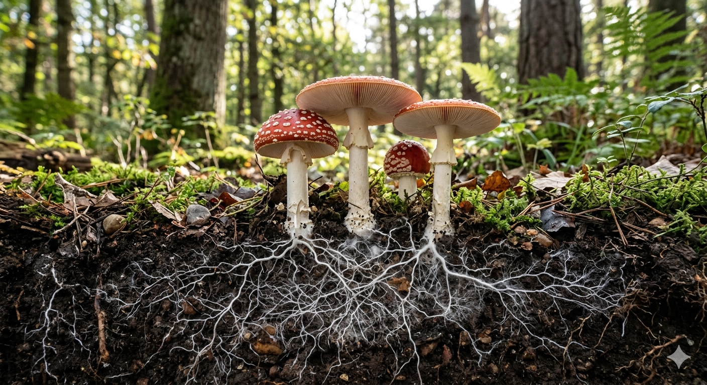

სოკოები არ არიან არც მცენარეები და არც ცხოველები ისინი სულ სხვა სამყაროს ქმნიან,
თუმცა სოკო ძალიან გავს მისი მოქმედებით ადამიანს და ცხოველს რადგან ისინი მცენარისგან განსხვავებით არ
გამოიმუშავებენ საკვებ
ნივთიერებებს თავად,
როგორც ამას მცენარეები ასრულებენ ,
სოკოები პირიქით ისინი ნადირობენ
სხვადასხვა ცოცხალ
ორგანიზმებზე მათ
შეუძლიათ თავადვე გაავრცელონ თავიანტი სპორები და ზომბად აქციონ სხვადასხვა ცოცხალი ორგანიზმები ანუ მართონ,
ისინი შლიან სხვადასხვა სსახის ნარჩენებს და გადაამუშავებენ მათ.
მიცელიუმი: ბიოლოგიური სტრუქტურა, ფუნქციები და ეკოსისტემური მნიშვნელობა
მიცელიუმი წარმოადგენს სოკოების სამეფოს ორგანიზმთა ვეგეტატიურ სხეულს, რომელიც შედგება ნიადაგში,
სუბსტრატში ან მცენარეთა მერქანში განტოტვილი, მიკროსკოპული ძაფების — ჰიფებისგან. მეცნიერული თვალსაზრისით,
მიცელიუმი არის თავად ძირითადი ორგანიზმი, ხოლო მიწის ზემოთ არსებული სოკო (ქუდი და ღერო) მისი დროებითი
რეპროდუქციული ორგანოს — ნაყოფსხეულის გამოვლინებაა.
ევოლუციური ასაკი და მასშტაბები
ქსელის ასაკი: მიცელიუმის მიწისქვეშა ევოლუციური ქსელი ნახევარ მილიარდ (500 მილიონ) წელზე მეტს ითვლის. ის
დინოზავრებსა და ხმელეთის პირველ ხეებზე ძველი სტრუქტურაა.
უდიდესი ორგანიზმი: ორეგონის შტატში (აშშ) დაფიქსირებული თაფლის სოკოს (Armillaria ostoyae) მიცელიუმი
მიწისქვეშ მოიცავს 10 კვადრატულ კილომეტრს, იწონის დაახლოებით 6000 ტონას და მისი ინდივიდუალური ასაკი 8000
წელს აღწევს.